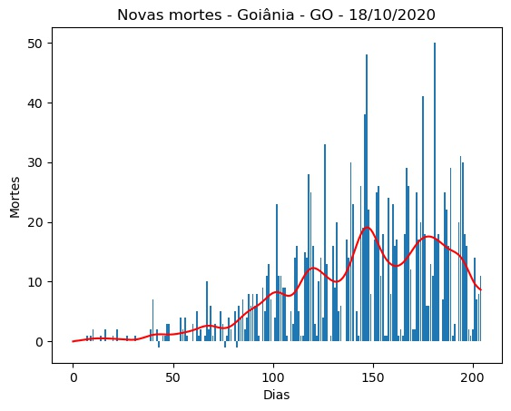

Goiânia - GO - 18/10/2020.
Detalhes técnicos, aqui. Clique aqui para uma versão em PDF desta análise.
População: 1.516.113.
Início e fim da série: 2020-03-27 e 2020-10-17. (205 elementos - 29 semanas e 2 dias).
Número de casos totais e mortes: 59.845 e 1.580. (39.473 e 1.042 por milhão de habitantes, respectivamente.)
r0 (integral) efetivo médio (duas últimas semanas - três dias de atraso): 1,34 (std = 0,41).
Último intervalo para r0 (três dias de atraso): (0,95 : 1,48).
Limiar imunidade de grupo nR (baseado no valor de r0 (integral) efetivo médio) = 0,25.
Previsão do número total de casos para os próximos 5 dias: 60.051, 60.257, 60.464, 60.670, 60.876.

